Odeabank
Banking & Investment super app
- Year
- 2021
- Client
- Odeabank, frog
- Duration
- Sep 2021 – Jan 2022
- Team
- 3 designers, team lead, programme manager
- My role
- Research, UX assessment, Foundation design, User flows
- Awards
-

A mobile app that brings everyday banking and investing into one place, so customers can move money, follow their portfolio and talk to their relationship manager without switching between tools.
I worked with the bank’s teams to shape a first release that felt simple for newcomers and still had the depth experienced investors expect.
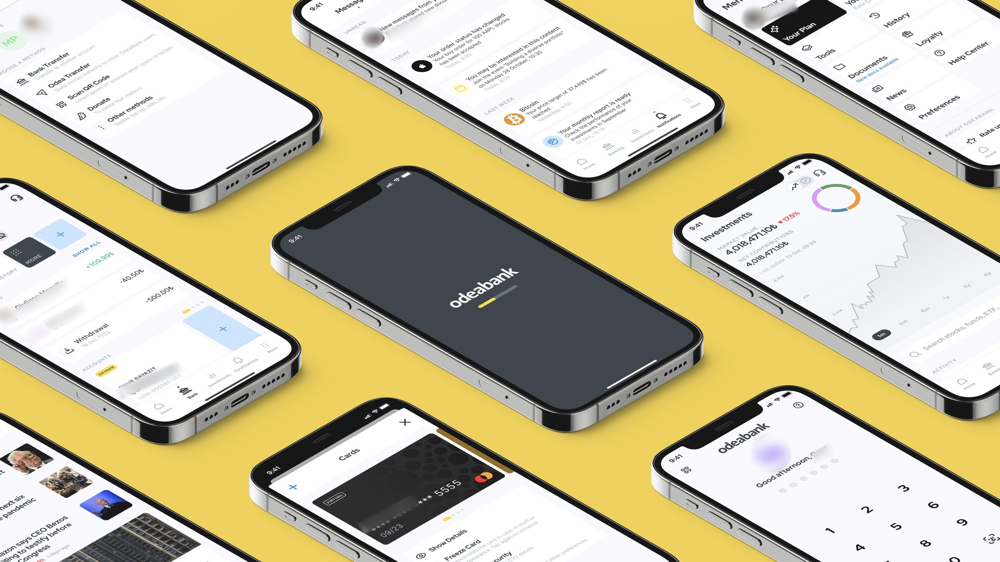
Background
Odeabank’s setup was split across three products: its own banking app, a robo-advisor for investing, and a concept built by another consultancy. They didn’t work together seamlessly, and all three fell short on key UX criteria.
The bank’s digital experience also needed to reflect its high-touch, premium service, with consistent branding across channels and deeper personalisation.
The goal was an MVP that earned trust first: clear, calm and dependable, with room to grow into a full super app.
How might we design a super-app experience that will work as a holistic financial tool for Odeabank’s clients
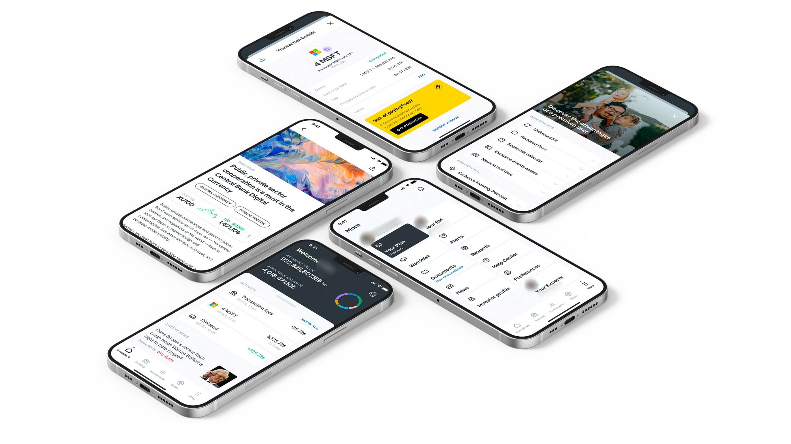
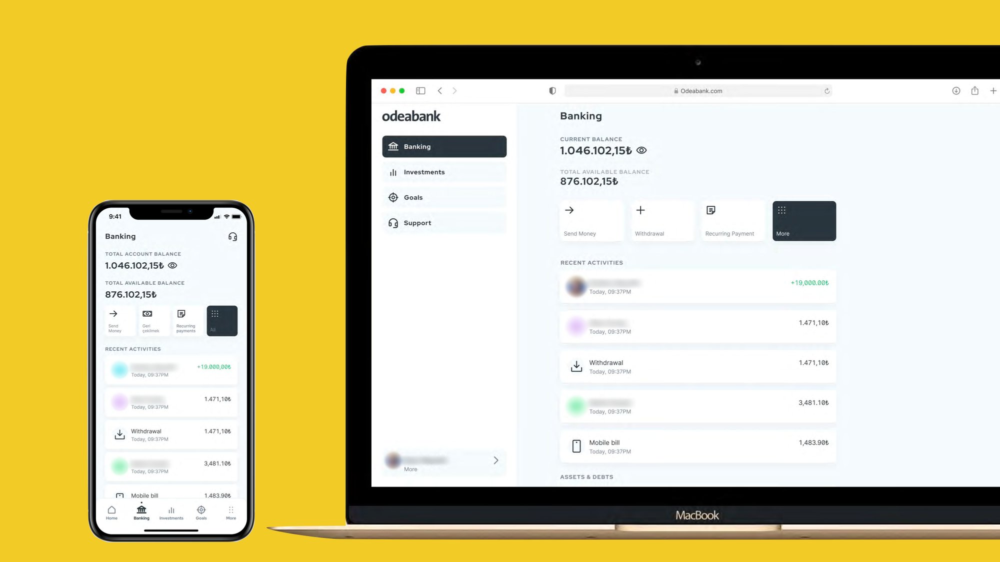
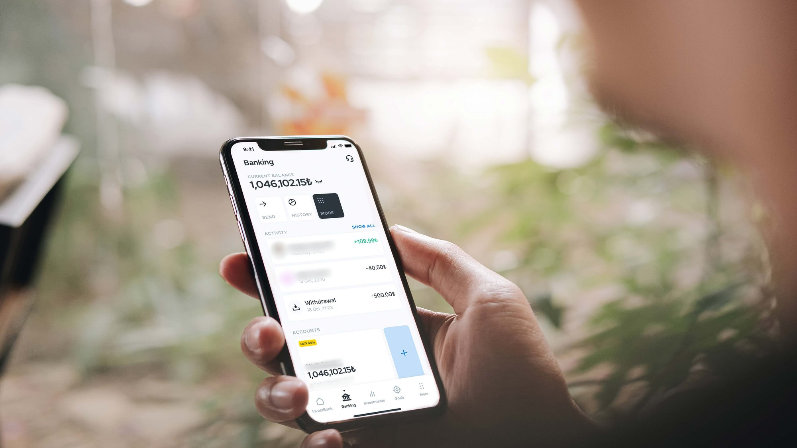
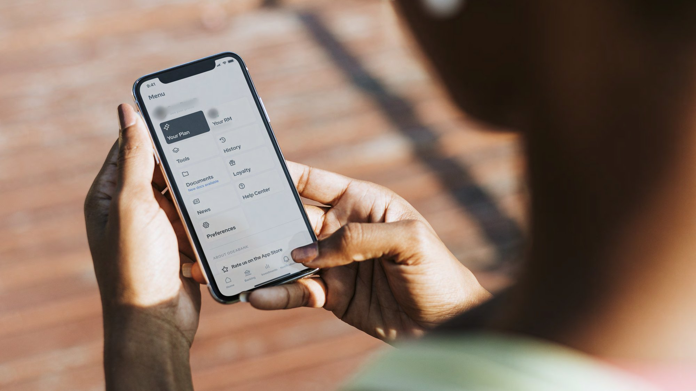
Process
Research and assessment. With a team member, I ran a detailed heuristic study of the Odeabank mobile app, vendor apps and prototypes, outlining flaws and inconsistencies as well as what to build on. I also took on the UX benchmark, studying the best experiences in financial services. An ideation workshop then validated the app’s concept and set the scope for the MVP.
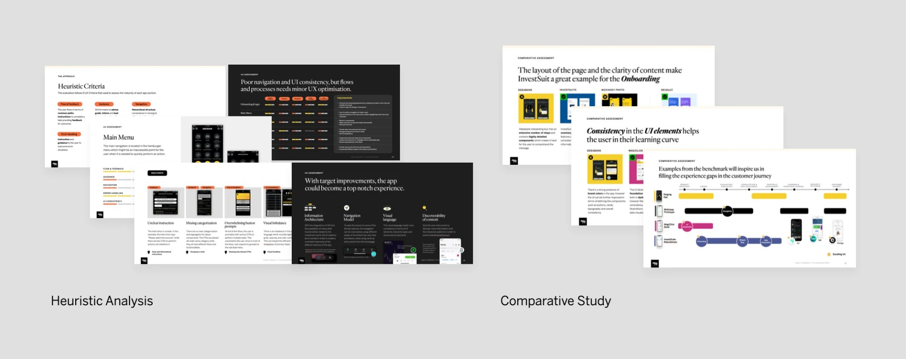
Foundation and flows. I worked on the foundational flows, built on a new information architecture across home, news, investments, banking, support and profile. A concept test with five participants across more than six flows validated the direction, usability patterns and visual language, and the app was well perceived.
Design and delivery. In delivery I covered more than 30 critical user stories, exploring each flow, validating it internally, presenting it to the client and iterating on their input. Frequent sketching with the client kept the pace up. A shared UI foundation of colour, typography, icons and tokens helps banking and investment screens feel like one product.
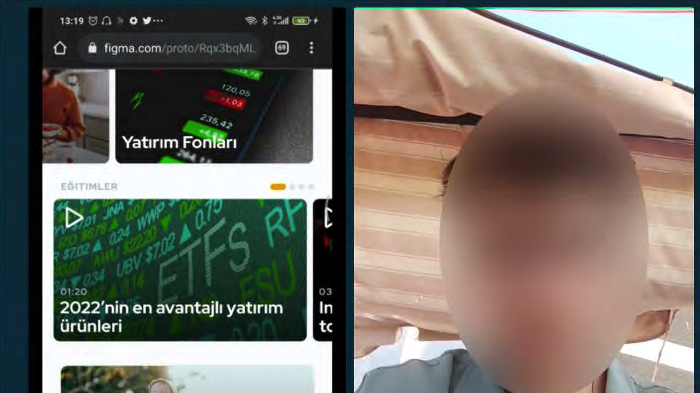
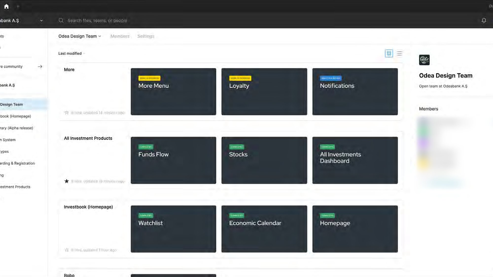
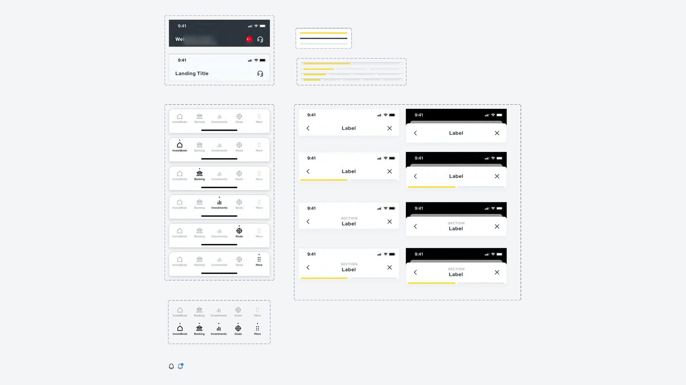
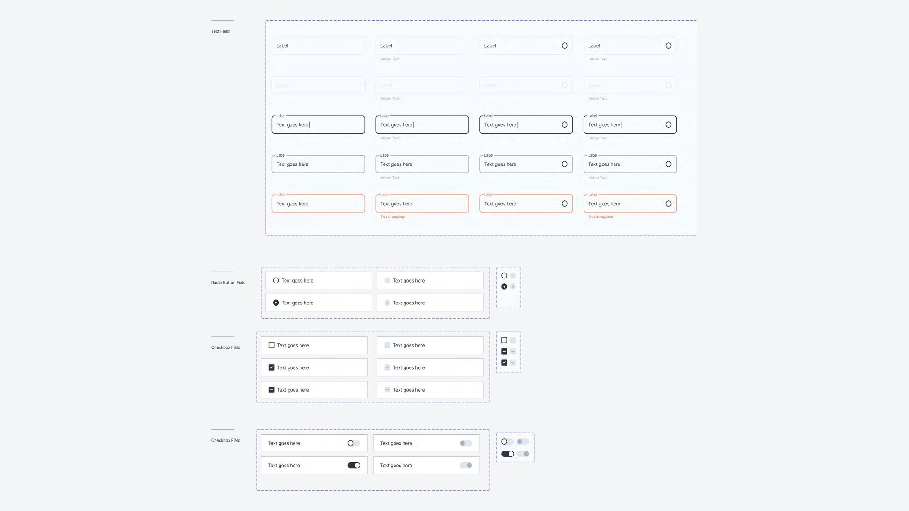
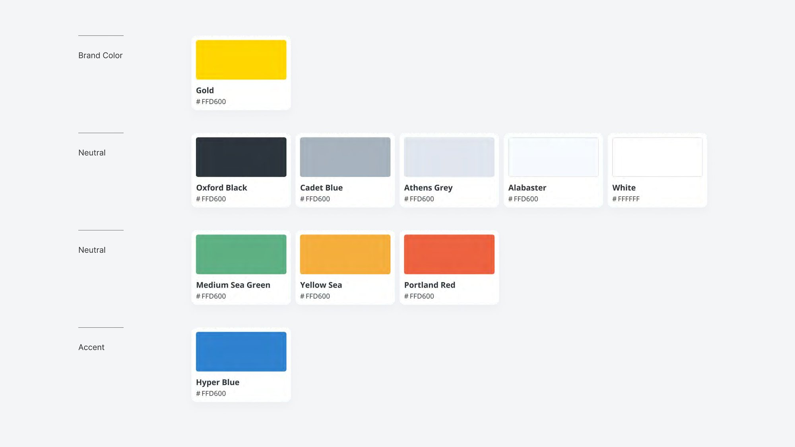
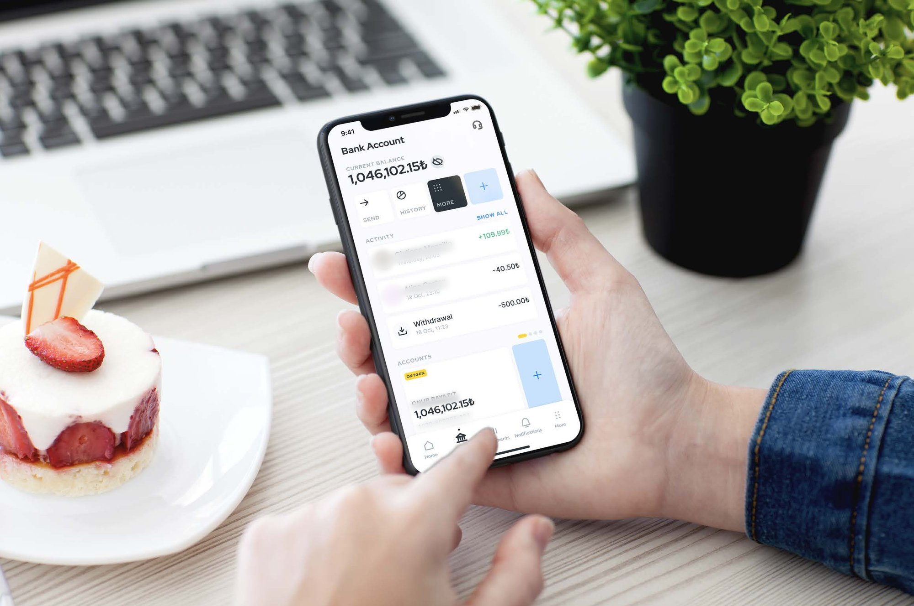
Results
The result is a first release that combines banking and investing in a single, consistent experience, with support and the relationship manager reachable from any landing page.
The MVP also gave the bank a solid base to build on. New features can be added without redesigning the foundations, and the same principles carry across the app, the website and future channels.
Looking back, the biggest lesson was how to make a complex topic like banking and investing simple and intuitive. As the only team member from India, collaborating with the Milan team, I also learned a lot from their process and attention to detail.